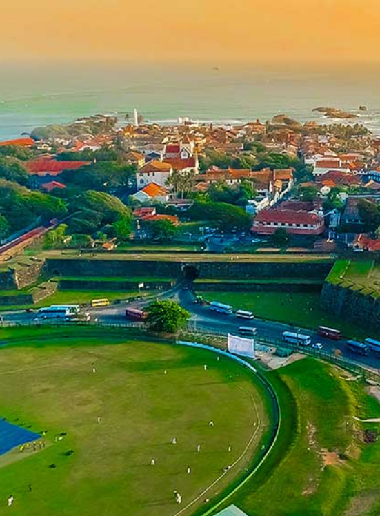

The Port of South Srilanka
- Galle -
Sri lanka has born for beautify the world, some places
has got a amazing nature creations. Galle, is one of beuty creature.
It is placed at the bottom of Sri lanka. Sri lanka has born for beautify the world, some places
has got a amazing nature creations. Galle, is one of beuty creature.
It is placed at the bottom of Sri lanka.
Galle Dutch
Galle Fort is a UNESCO World Heritage Site, originally built by the Portuguese in the 16th century
and then further developed by the Dutch and the British over the next 350 years. It covers nearly
4sqkm and is protected by 12 bastions and connecting ramparts.
The ground covers an area of 4.216 hectares, the distance from the wicket to the boundary being 75
yards and blue grass is used on the turf. The stadium includes three indoor practice nets and four
outdoor nets. The average first innings score in the Galle international stadium is 340.

Galle Dutch